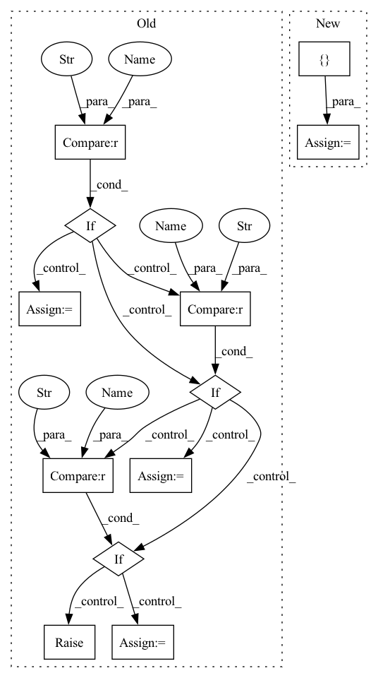

Pattern ID :19715

Before Change
dxs = np.linspace(-0.05, 0.05, 3)
dys = np.linspace(-0.05, 0.05, 3)
if action == "m0pdz":
dzs = np.linspace(-0.05, 0.05, 3)
elif action == "0pdz":
dzs = [0, 0.05]
elif action == "pdz":
dzs = [0.05]
else:
raise ValueError
das = np.linspace(np.deg2rad(-22.5), np.deg2rad(22.5), 3)
dbs = np.linspace(np.deg2rad(-22.5), np.deg2rad(22.5), 3)
dgs = np.linspace(np.deg2rad(-22.5), np.deg2rad(22.5), 3)
After Change
dxs = [-self.DP, 0, self.DP]
dys = [-self.DP, 0, self.DP]
dzs = [-self.DP, 0, self.DP]
das = np.linspace(-self.DR, self.DR, 3)
dbs = np.linspace(-self.DR, self.DR, 3)
dgs = np.linspace(-self.DR, self.DR, 3)
In pattern: SUPERPATTERN
Frequency: 4
Non-data size: 12
Instances
Fragment ID: 64338517
Project Name: wkentaro/safepicking
Commit Name: d6e097b7daaa836316bc0951a032e09461ae1d42
Time: 2021-06-11
Author: www.kentaro.wada@gmail.com
File Name: examples/target_pick/env.py
M Class Name: PickFromPileEnv
N Class Name: PickFromPileEnv
M Method Name: __init__(3)
N Method Name: __init__(4)
M Parent Class: Env
N Parent Class: Env
M File Name: examples/target_pick/env.py
N File Name: examples/target_pick/env.py
M Start Line: 39
M End Line: 61
N Start Line: 52
N End Line: 59
'>
Before Change
loss_instance_l = loss_class_l()
loss_instance_r = loss_class_r() if not isinstance(loss_class_r, int) else loss_class_r
if op == "sum":
mixed = loss_instance_l + loss_instance_r
sign = "+"
elif op == "mul":
mixed = loss_instance_l * loss_instance_r
sign = "*"
elif op == "div":
mixed = loss_instance_l / loss_instance_r
sign = "/"
elif op == "pow":
mixed = loss_instance_l ** 2
sign = "**"
else:
raise ValueError("Unrecognized op")
weights = (torch.ones(n_samples, n_assets) / n_assets).to(device=y_dummy.device, dtype=y_dummy.dtype)
After Change
true_tensor = python_operator(loss_instance_l(weights, y_dummy),
loss_instance_r(weights, y_dummy) if not r_is_constant else loss_class_r)
sign = {"add": "+", "truediv": "/", "mul": "*", "pow": "**"}[op]
mixed_tensor = mixed_loss(weights, y_dummy)
'>
Fragment ID: 64338516
Project Name: jankrepl/deepdow
Commit Name: cd0fa7772131cebf9a6abfcdd09474b1a20c4fc8
Time: 2020-06-22
Author: jankrepl@yahoo.com
File Name: tests/test_losses.py
M Class Name: TestAllLosses
N Class Name: TestAllLosses
M Method Name: test_arithmetic(4)
N Method Name: test_arithmetic(4)
M Parent Class:
N Parent Class:
M File Name: tests/test_losses.py
N File Name: tests/test_losses.py
M Start Line: 205
M End Line: 235
N Start Line: 207
N End Line: 237
'>
Before Change
else:
generator = torch.Generator(device=device).manual_seed(seed)
if input_image_type == "pt":
input_image = image
elif input_image_type == "np":
input_image = image.cpu().numpy().transpose(0, 2, 3, 1)
elif input_image_type == "pil":
input_image = image.cpu().numpy().transpose(0, 2, 3, 1)
input_image = VaeImageProcessor.numpy_to_pil(input_image)
else:
raise ValueError(f"unsupported input_image_type {input_image_type}.")
if output_type not in ["pt", "np", "pil"]:
raise ValueError(f"unsupported output_type {output_type}")
After Change
generator = torch.manual_seed(seed)
else:
generator = torch.Generator(device=device).manual_seed(seed)
inputs = {
"prompt": "A painting of a squirrel eating a burger",
"image": image,
"generator": generator,
"num_inference_steps": 2,
"guidance_scale": 6.0,
"output_type": "numpy",
}
return inputs
def test_stable_diffusion_img2img_default_case(self):
device = "cpu" // ensure determinism for the device-dependent torch.Generator
'>
Fragment ID: 64338512
Project Name: huggingface/diffusers
Commit Name: a7f25b4a881c0835980e2a3db5fe09bfc4ab2dc0
Time: 2023-05-01
Author: yixu310@gmail.com
File Name: tests/pipelines/stable_diffusion/test_stable_diffusion_img2img.py
M Class Name: StableDiffusionImg2ImgPipelineFastTests
N Class Name: StableDiffusionImg2ImgPipelineFastTests
M Method Name: get_dummy_inputs(3)
N Method Name: get_dummy_inputs(5)
M Parent Class: unittest.TestCase,PipelineLatentTesterMixin,PipelineTesterMixin
N Parent Class: unittest.TestCase,PipelineTesterMixin
M File Name: tests/pipelines/stable_diffusion/test_stable_diffusion_img2img.py
N File Name: tests/pipelines/stable_diffusion/test_stable_diffusion_img2img.py
M Start Line: 99
M End Line: 126
N Start Line: 105
N End Line: 117
'>
Before Change
dxs = np.linspace(-0.05, 0.05, 3)
dys = np.linspace(-0.05, 0.05, 3)
if action == "m0pdz":
dzs = np.linspace(-0.05, 0.05, 3)
elif action == "0pdz":
dzs = [0, 0.05]
elif action == "pdz":
dzs = [0.05]
else:
raise ValueError
das = np.linspace(np.deg2rad(-22.5), np.deg2rad(22.5), 3)
dbs = np.linspace(np.deg2rad(-22.5), np.deg2rad(22.5), 3)
dgs = np.linspace(np.deg2rad(-22.5), np.deg2rad(22.5), 3)
After Change
dxs = [-self.DP, 0, self.DP]
dys = [-self.DP, 0, self.DP]
dzs = [-self.DP, 0, self.DP]
das = np.linspace(-self.DR, self.DR, 3)
dbs = np.linspace(-self.DR, self.DR, 3)
dgs = np.linspace(-self.DR, self.DR, 3)
'>
Fragment ID: 64338506
Project Name: wkentaro/safepicking
Commit Name: d6e097b7daaa836316bc0951a032e09461ae1d42
Time: 2021-06-11
Author: www.kentaro.wada@gmail.com
File Name: examples/target_pick/env.py
M Class Name: PickFromPileEnv
N Class Name: PickFromPileEnv
M Method Name: __init__(3)
N Method Name: __init__(4)
M Parent Class: Env
N Parent Class: Env
M File Name: examples/target_pick/env.py
N File Name: examples/target_pick/env.py
M Start Line: 39
M End Line: 61
N Start Line: 52
N End Line: 59